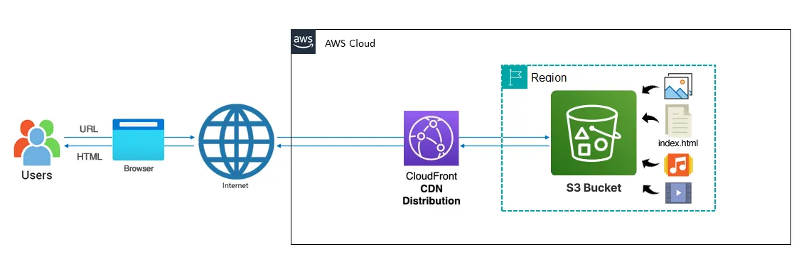
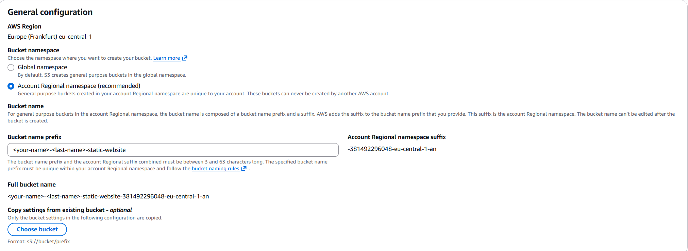
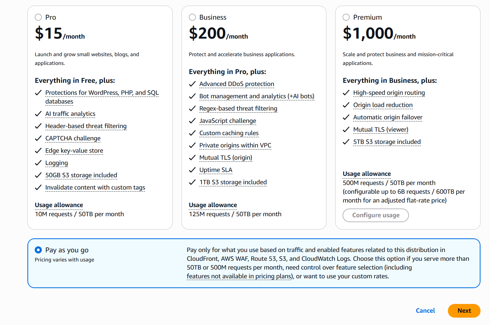
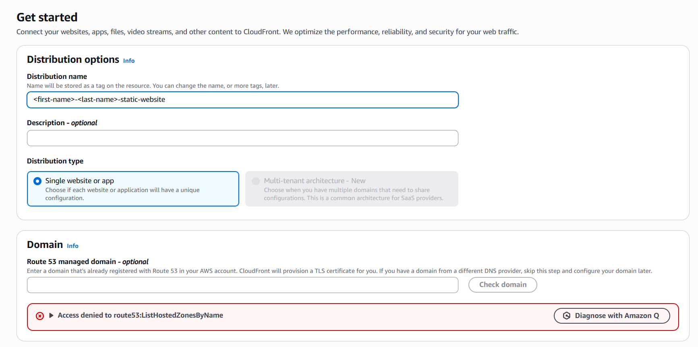
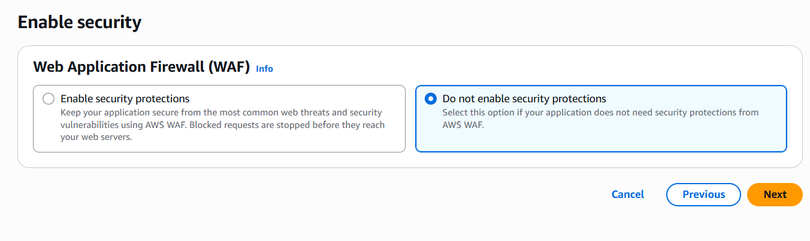
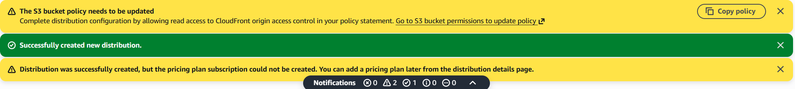
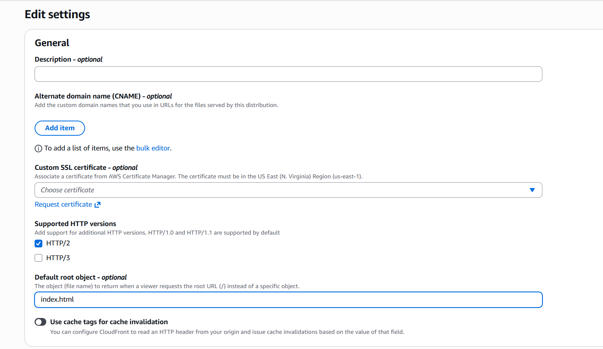
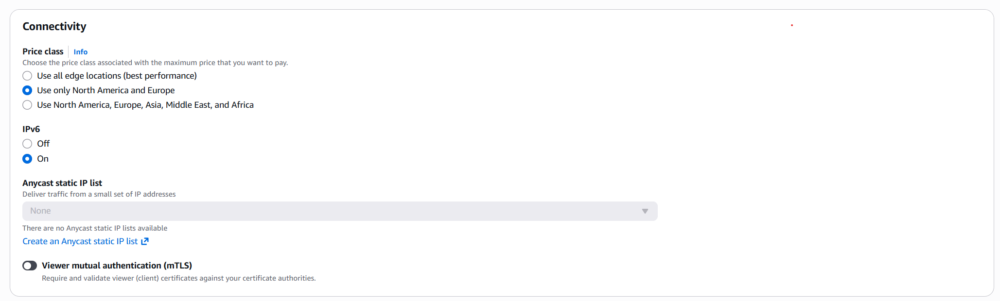

In this lab you will host a static HTML website on Amazon S3 and distribute it globally using Amazon CloudFront with Origin Access Control (OAC). By the end, your website will be reachable via a CloudFront URL while the S3 bucket remains completely private — a pattern used by every production static site on AWS. This directly maps to SAA Domain 2 (Design Resilient Architectures) and Domain 1 (Design Secure Architectures).

index.html file ready to upload — see below if you don't have one yetindex.html yet? Generate one with AI:
You are a professional frontend developer. Create a website for me to sell [pick anything — shoes, cars, planes, watches, etc.]. Global users should be able to browse and purchase the item, with a variety of listings showing different images, descriptions, and prices. Use only HTML — no frameworks, no backend, no JavaScript required.
index.html<your-name>-<last-name>-static-websitejane-doe-static-website.-123456789012-eu-central-1-an to form the full bucket name. You do not need to type this suffix.

s3:PutEncryptionConfiguration…" This is expected and intentional. S3 already applies server-side encryption (SSE-S3) to all objects by default — you do not need to configure it manually. Skip the Default Encryption section and continue to the next step.
index.html file, and click Upload.
jane-doe-static-website)
Click Next.

If the banners appear:index.html

Click Save changes.d1abc.cloudfront.net). Open a new browser tab, paste the domain name, and press Enter. Your HTML page should appear over HTTPS.https://<your-domain>.cloudfront.net shows your HTML page over HTTPShttps://<your-bucket-full-name>.s3.eu-central-1.amazonaws.com/index.html returns AccessDenied — the bucket is private/ returns 403; setting it to index.html maps the root path correctly